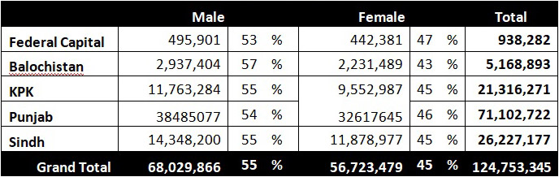
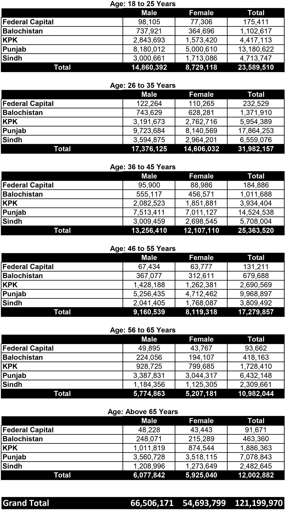

Form Submission Centers established in the offices of Assistant Registration Officers
Important Video Message regarding Revision of Electoral Rolls:
Latest Province Wise Voters Statistics (as on 7-10-22)

Latest Voter Statistics Age wise:
VOTERS FORMS:
- Form 21: For Registration / Transfer of Vote
- Form 22: For Objection / Deletion of Vote
- Form 23: For Correction of Particulars
Important Video Message regarding Revision of Electoral Rolls:
Statement showing the district-wise and tehsil-wise number of
minorities in the electoral Rolls:
Province Wise Voter Statistics as on 17 May 2022

Disaggregated Data Of Registered Men And Women Voters In Constituencies (As On 17-1-2022)
- NA (National Assembly)
- PP (Provincial Punjab)
- PS (Provincial Sindh)
- PK (Provincial Khyber Pakhtunkhwa)
- PB (Provincial Balochistan)
Age Wise Voter Statistics as on 04 Nov 2021

Disaggregated Data Of Registered Men And Women Voters In Constituencies
- NA (National Assembly)
- PP (Provincial Punjab)
- PS (Provincial Sindh)
- PK (Provincial Khyber Pakhtunkhwa)
- PB (Provincial Balochistan)
Final Electoral Rolls -2020. District Wise Statistics of Registered Voters ( click here to open)
VOTERS FORMS:
- Form 21: For Registration / Transfer of Vote
- Form 22: For Objection / Deletion of Vote
- Form 23: For Correction of Particulars